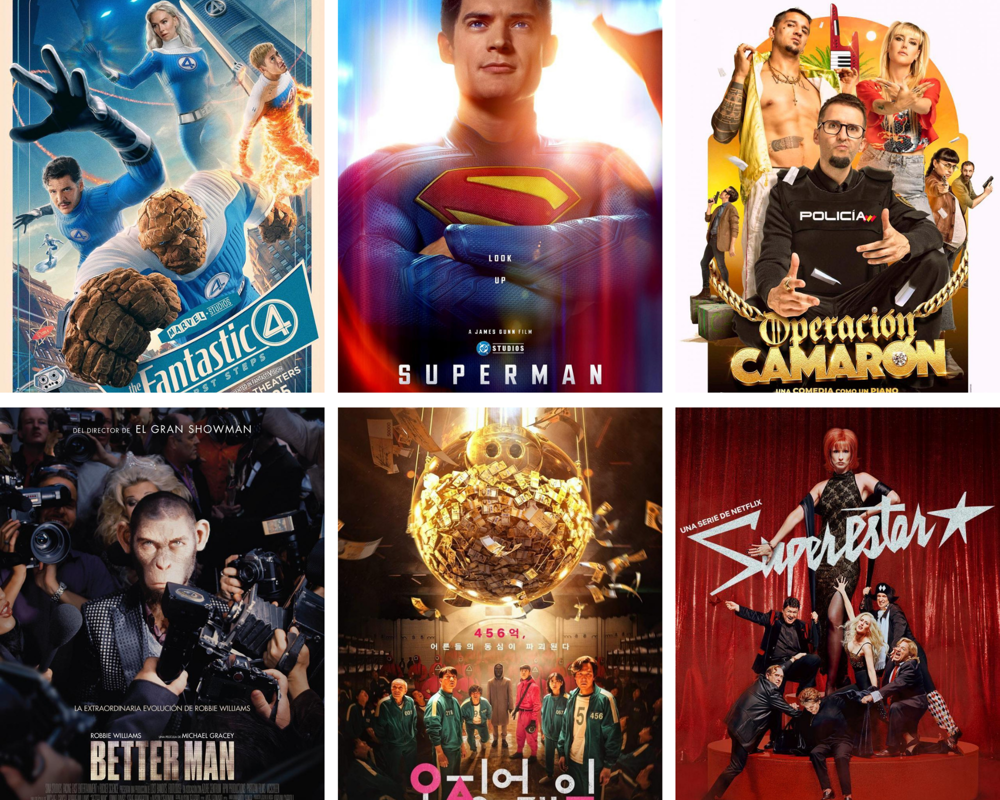

Actualización en curso
Las primeras semanas de vacaciones, al menos en mi caso, son graduales. La cabeza sigue en el trabajo; el cuerpo, en cambio, sólo me pide descanso. Poco a poco, el cambio de horario, los paseos nocturnos, alguna caña a deshora y la música en directo me llenan el corazón y el cuerpo de sangre nueva.
Los más viejunos recordaréis la típica notificación del antivirus de turno que decía "La base de datos de virus ha sido actualizada". Pues en eso estoy, actualizando mi base de datos, actualizando mi sistema.
En la entrada anterior reflexionaba sobre el curso, así que en esta me centraré en el futuro. Pero antes, un cuña publicitaria relativa al blog.
Blog¶
No sé si te habrás fijado, pero ha habido algunos pequeños cambios en el blog. El primero, y más importante, ha cambiado la dirección. Antes formaba parte de los apuntes de IABD y ahora tiene su espacio propio en https://aitor-medrano.github.io/blog/index.html.
He cambiado el color azul por un amarillo más informal y personal, acompañado de un cambio de logo. Además de las entradas mensuales, me he planteado escribir, cuando el tiempo y la ocasión coincidan, pequeñas reflexiones educativas.

Lo he comentado con algunos compañeros, justificando el por qué le dedico tiempo a estas entradas (cada vez más, y por eso, durante el curso académico, su periodicidad se ve penalizada), sin realmente saber si hay alguien detrás. Y aunque, por un lado, puede que a alguien le entretenga unos minutos y aprenda (o no) algo, el objetivo principal es dejar un cuaderno de bitácora para mis hijos.
Durante una época, siempre que añadía una entrada, la compartía en mis redes sociales (cada vez menos activas). Dejé de hacerlo porque ahora escribo más para ellos que para el resto (aunque algunos me habéis dicho que no lo deje, que os gusta saber de mí). Esta entrada sí la difundiré para dar a conocer el cambio de dirección, pero no tengo intención de hacer más promoción.
Volviendo al tema de mis hijos: creo que es un bonito regalo. Conocer a su padre más allá de dentro de casa. Qué pasa por mi cabeza. Marina y Andreu están en pleno epicentro de la adolescencia, viviendo una vida plena y pese a saber a qué me dedico, me ven en el ordenador, tecleando, corrigiendo. Hablamos en las comidas y cenas, ratos de sofa, pero no les cuento mis penas e inquietudes laborales ni mis pensamientos docentes. Algún intento ha habido, pero hemos de entender que no es su momento. Y creo que lo habrá, se harán mayores y entonces el blog estará ahí.
Un nuevo principio¶
Tras un primer intento fallido, habemus desiderata, y los astros se alinearon: voy a poder repetir módulos. Se viene un curso 25/26 con Bases de Datos, IABD, PIIAF y el C1 de inglés.
Bases de Datos¶
En Base de Datos, tras el currazo del año pasado preparando los materiales, este me voy a centrar en refinarlos.
Durante estas semanas me he leído el libro Grokking Relational Database Design, del cual he cogido algunas ideas que voy a añadir a los apuntes mediante anexos, como por ejemplo:
- Almacenamiento de contraseñas encriptadas
- Uso de encriptación simétrica para almacenar, por ejemplo, tarjetas de crédito.
- Profundizar en el uso de índices full-text para incrementar el rendimiento de las búsquedas.
Por otro lado, tengo otras ideas a medio cocer:
- Consultas sobre datos geoespaciales.
- Uso de JSON como tipo de dato, así como las diferentes funciones para interactuar con el formato.
Así pues, las siguientes semanas quizás lea menos y programe y escriba más. Ya lo dije, me gusta escribir. No todos los días, pero disfruto abstrayéndome en el texto, repensando actividades y explorando alternativas para alumnado de todo tipo y con diferentes dificultades.
Dejo en el backlog los libros SQL AntiPatterns y PostgreSQL Mistakes and How to Avoid Them que seguro que iré picoteando.
IABD y PIIAFP¶
Lara y proyecto IoT. No os cuento nada nuevo, porque estamos igual que el mes pasado.
De Lara, probablemente en octubre hagamos una reunión presencial para fijar la hoja de ruta. Prioritario: definir el flujo de trabajo para compartir código y desplegarlo en producción. Es el año de la confirmación. Tenemos que llegar a una solución que haga una predicción sobre el audio, más o menos precisa, pero funcional. Y sí, le voy a dedicar tiempo. Quiero que funcione. Es un proyecto que siempre lo tendré a mi lado, al fin y al cabo, van a ser cuatro años juntos.
Por el otro lado, los proyecto de IoT están en standby. Ya me temía que no iban a poder enviarnos datos desde Villena antes de verano, pero bueno, a la vuelta de verano, toca apretar tuercas y ponerlo todo en funcionamiento. Necesitamos datos para que funcione como queremos. A mitad de julio firmamos el convenio con la empresa para la digitalización de un sistema de colmenas alimentado con placas solares que tiene muy buena pinta. Lo dicho, en septiembre a full con el IoT.
Por ello, este mes he seguido ampliando conocimientos de series temporales con el libro Time Series Forecasting in Python, entiendo los modelos ARIMA basado en estadística, para luego dar el paso a la IA. Llevo la mitad del libro, poco a poco.
Además, tengo a mitad escribir unos apuntes sobre InfluxDB. Seguiremos informado.
EOI¶
De la EOI, unas pocas palabras. Matrícula hecha. Martes y jueves de 9 a 11. He empezado a ver Dr Who en inglés, la temporada uno de 2005 (tengo 15 temporadas por delante y al parecer 6 doctores). Primer capítulo entretenido y más o menos lo entiendo casi todo. Eso sí, no puedo estar haciendo otra cosa (cocinar o recoger), requiere mi atención al 100%.
Entiendo que las clases empezarán la penúltima semana de septiembre. A ver si consigo ver más capítulos de Dr. Who (la primera temporada son 13, lo intentaremos) y seguiremos leyendo libros de informática en inglés.
Salud y tiempo libre¶
No quiero venir aquí a contaros mis miserias, pero como es de recibo, y estos días estoy pensando mucho en ello, os pongo al día.
El hombro sigue dado guerra. Ayer mismo me infiltraron para reducir el dolor y facilitar la rehabilitación. No es una lesión muy dolorosa, pero sí extremadamente molesta. No duermo bien, y eso para mí, es una traba muy grande. Luego, a veces se me olvida, y cojo algo o hago algún gesto malo y me dan pinchazos dolorosos.
Le sumamos lo delicado de mi estómago y la maltrecha rodilla, y cualquier día aparezco en la sección de saldo del mercadillo de tu barrio.
Cuando tuve la crisis digestiva, allá por el 2017, la natación y el ciclismo vinieron a mi Salvación (junto al amor :). Todas las semanas sin falta iba a clases a la piscina y los findes con la bici. Esas rutinas, con el cambio de horario se fueron flexibilizando hasta casi desaparecer. Baja el deporte, suben los dolores.
Por aquí ya tenemos una edad en la que si dejas al cuerpo de lado, él te deja a ti. Eso es un hecho.
Conclusión: a la vuelta en septiembre me voy a apuntar a preparador físico. Necesito obligarme a ir a un lugar con un horario para coger la rutina. Que me enseñen bien qué ejercicios puedo hacer, cuáles me benefician más que otros. Necesito fortalecer espalda, cervicales, hombros. Recuperar piernas para reducir el dolor de rodilla. Y luego seguir picoteando la bici y la natación.
¿Y me va a dar tiempo a todo? ¿No me dejaré algo por el camino?
Sinceramente creo que sí. Sí que me dará tiempo, y sí me dejaré algo. Por un lado, mi horario va a rondar de 16:00 a 21:00 todas las tardes. A la EOI, iré martes y jueves de 9 a 11. Si consigo ir al preparador físico de 9 a 11 los lunes y miércoles, me queda el viernes para la natación o ir a almorzar con algún amigo.
Me da tiempo a sentarme en el ordenador de 12 a 14 a preparar clases y corregir, luego comer, descansar un poco y al trabajo.
Además, este curso quería volver a jugar a la consola con mayor frecuencia, pero la dejaré para las sobremesas o algún mediodía que tenga más relajado. Nada de series ni pelis entre semana, más allá de las que vea con la familia por la noche.
No todo es trabajar¶
El mes pasado dije que estaba "preparando el Low, este mes ha sido todo Empire of the Sun y Pet Shop Boys. Le he dado una oportunidad a Siloé, pero no me terminan de convencer. Acabo volviendo a Viva Suecia.". Pues no iba mal encaminado.
¡Viva el Low! ¡Viva la música en directo! ¡Viva la música en directo con amigos!. Bailar, chillar (para decir cantar hay que entonar, así que dejémoslo en que chillo más que canto), sudar, reír y volver a empezar. Conciertazos en primera fila de Pet Shop Boys, Viva Suecia, Empire of the Sun (mítico el momentazo rock and roll), y otros disfrutones como Amaia, Varry Brava o Fangoria.
En cuanto al ocio digital, muchas pelis, dos videojuegos y lectura. Para hacerlo más conciso y en forma de lista, lo más destacable:
-
Cine: ¡Hemos ido al cine dos veces! Superman y Los cuatro fantásticos, y mira, dos muy buenas pelis de supehéroes que buscan la redención y recuperar sensaciones. Soy más de DC que de Marvel, pero las dos valen la pena. En casa, mucha comedia española que en unos días no me acordaré de ellas, pero por destacar una, nos reímos con Operación Camarón. Del resto de pelis vistas, me encantó Better Man, biopic de Robbie Williams, mitad mono, mitad humano loco.
-
Series: Pocas series, lo ratos que hemos estado juntos hemos preferido ver alguna peli. Por mi cuenta, terminé la segunda temporada de El juego del calamar (Netflix) y he empezado la tercera. Con mi mujer, abandonamos Los Sin Nombre (Movistar+), la retomaremos en otro momento, y estamos viendo a ratos Superstars (Netflix) que a veces se pasa de onírica pero está curiosa.

-
Videojuegos: Este mes he dejado los indies de lado y me he centrado tanto en Lords of the Fallen (Xbox) , que sin ser ninguna maravilla es más o menos lo que necesitaba, ya que llevo cerca de 30h y creo que estoy en la parte final (me está gustando la dualidad entre la realidad y el umbral), como en Shadow of the Tomb Raider (PS5), con Lara resolviendo todos los puzzles y coleccionables repartidos por el mapa.
-
Lectura: Sí, ya tiene su propio apartado. Leer en la playa o en el balcón con la brisa del mar, transforma el acto en placer instantáneo. Casi devoré Todo Vuelve, de Juan Gómez Jurado con Aura y las amigas luchando contra viento y marea, y dejando todo abierto para el cierre de la segunda trilogía, y retomé Tokio Blues, de Murakami que lo empecé hace dos veranos, pero no estaba con el mood apropiado, y ahora sí que me ha enganchado. Una visión solitaria y existencialista de las relaciones en la cultura japonesa. Y como todos los finales de julio, llega el cambio de agenda. Tras un curso con Basquiat, vuelvo a los Gatos Meow Meow (me encanta la encuadernación y calidad de las agendas Erik).
Lo que está por venir¶
Modo verano ON: Playa, siesta y amigos. Acabado el Low, ahora quedan las fiestas de Elche y Vergel, y la escapada con los amigos a Cazorla.
Mantengo lo que comenté: "Algún rato me sentaré delante del ordenador, pero siempre como plan B o C. Le daré a los libros que os he comentado. Pero con calma". Para muestra un botón: en la última semana apenas he enchufado el ordenador 2 ratos (todavía estábamos en julio y había que leer el correo del trabajo), y hoy casi por obligación moral para escribir el blog.
En agosto seguiremos actualizando el sistema, reformateando el alma y el cuerpo, preparándonos para la siguiente iteración docente.
Nos leemos el mes que viene.